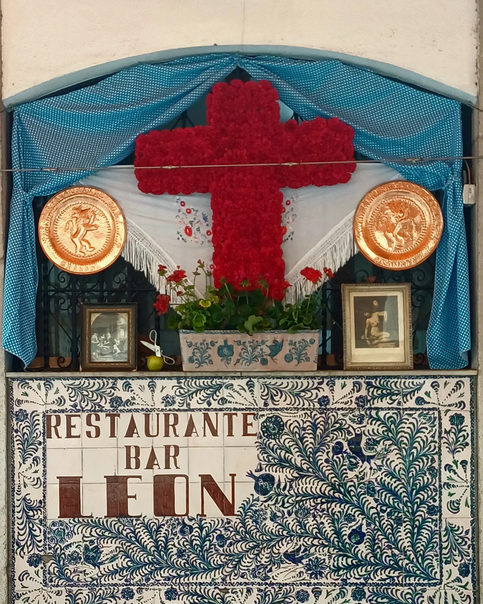
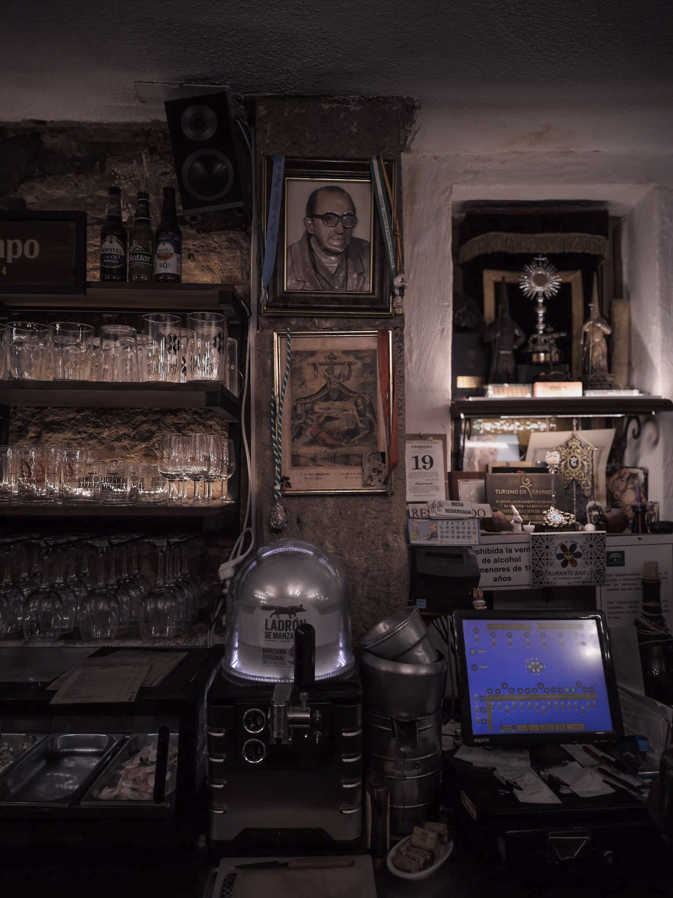
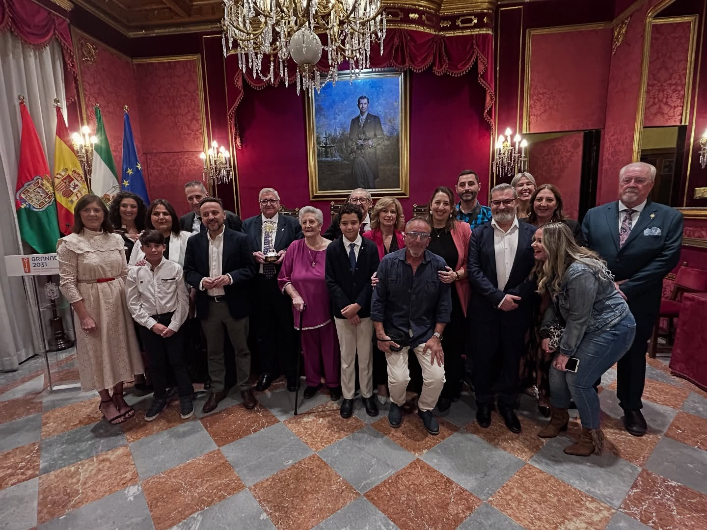
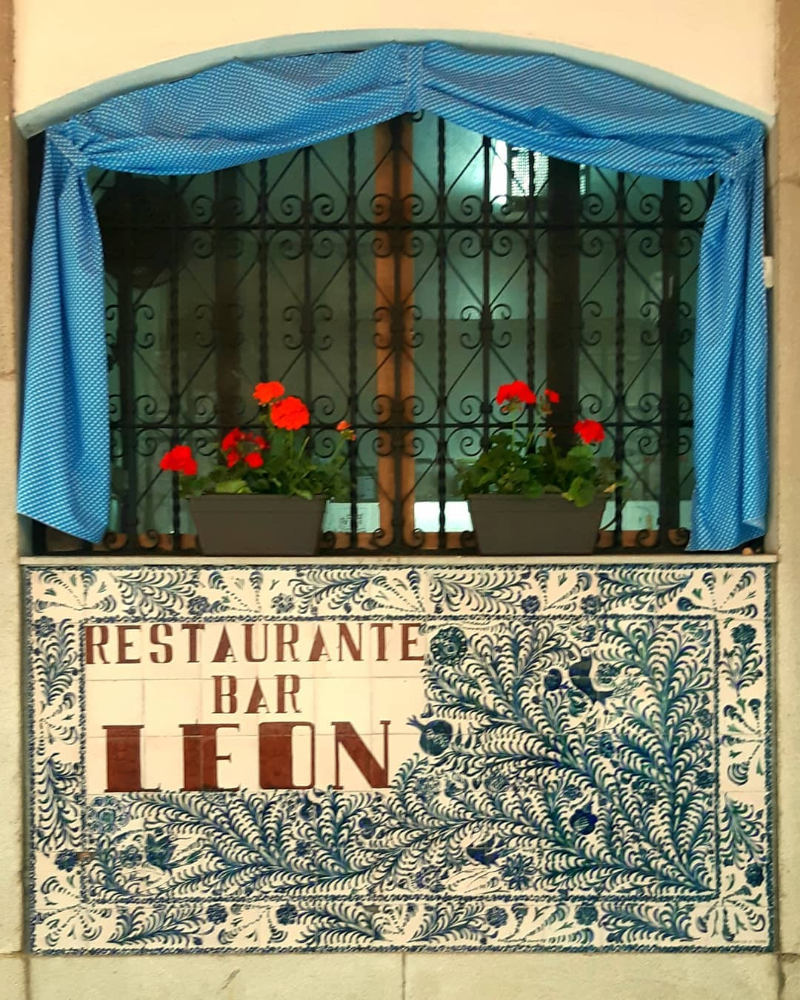
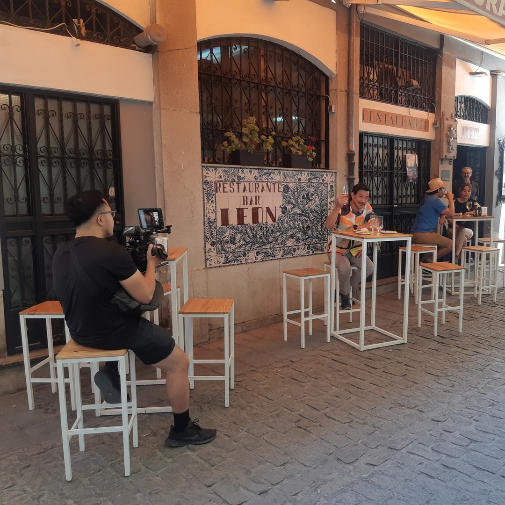

BAR LEÓN
Desde 1959 · Albayzín · Granada
«No se sienta cliente, somos amigos.»
Platos de casa, guiso y barra granadina
Sabores de Andalucía
Tres generaciones en la misma barra
La familia León
Tres generaciones después, seguimos sirviendo Granada en la mesa. En 2009 celebramos el 50 aniversario cobrando en pesetas. No era nostalgia. Era memoria compartida.


Granada, en la puerta y en la mesa
Una institución viva
- Cruz de Mayo en la fachada, como cada mayo desde hace décadas.
- Semana Santa: el rincón cofrade y las hermandades de la casa.
- Cocina andaluza tradicional: guiso, casquería y barra.


El lenguaje visual de esta página —azul Fajalauza, ramas y granadas— procede del panel cerámico que corona la fachada del bar en la Calle Pan, 1.
Dónde estamos
Junto a Plaza Nueva
C. Pan, 1 · Albayzín · 18010 Granada
A un minuto de Plaza Nueva, donde el Albayzín baja hacia la ciudad.
Abrir en Google MapsTeléfono: +34 958 22 51 43